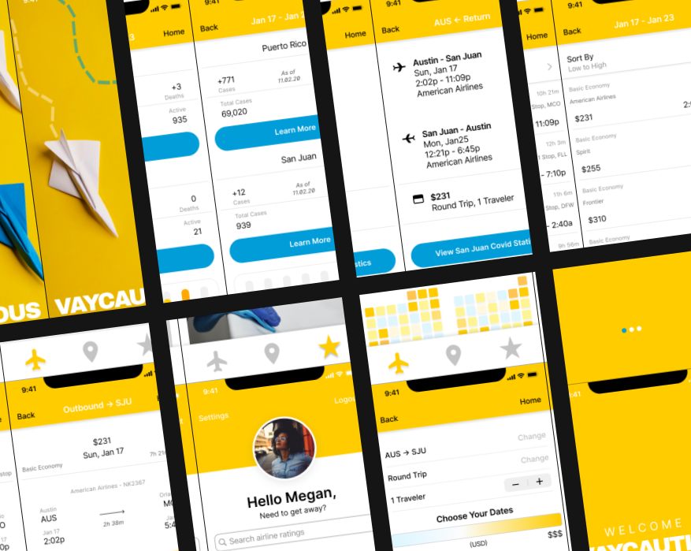

VAYCAUTIOUS
A mobile app prototype that lets users book their flights while
simultaneously viewing Covid data for airlines and destinations.

OVERVIEW
In addition to tedious flight search required, travelers are overwhelmed by the amount of covid research needed when planning travel.
How might we ease the burden of booking flights during a pandemic?
The goal was simple, to develop an app that lets users book their flights while simultaneously viewing Covid data for airlines and destinations.
MY ROLE
UX/UI Designer
- Research
- Empathize
- Create
- Test
- Develop
Research Partner | Jenna Biro
RESEARCH
In this research project, we planned and conducted interviews with five frequent flyers from around the nation. Followed by two Instagram surveys consisting of ten different polls or questions.
We began by choosing 5 users to administer interviews with in order to understand what struggles they endured whilst traveling among a pandemic.
We also created a series of Instagram Polls on our respective accounts which collectively reached over
1,600 followers.
The survey consisted of 10 questions and ran on our two accounts for 24 hours each.
DISCOVERIES
Immediately, we found that Covid-19 tremendously affected all aspects of their normal travel routine.
Interviews revealed that booking travel plans changed significantly due to the risks and annoyances
associated with covid reports, statistics, protocols, and more.
“That’s probably been the hardest part of traveling right now, or trying to plan for traveling. You can’t look out as far as you were before because things change so quickly. Spikes could happen in different cities and things like that, events get cancelled last minute...planning around it and really kind of solidifying that. It’s just always up in the air a little bit.”
- Jessica Miller, Age 28
SYNTHESIZE
Next we took all the collected data from interviews and synthesized those insights with an affinity diagram.

52% of followers we reached out to had NOT flown during
the pandemic.
• KEY TAKEAWAYS •
User’s main frustrations with travel were price, scheduling, and lack
of transparency.
82% of surveyors said COVID stats are important when choosing destinations.

EMPATHIZE
Meet our User Persona and frequent flyer, Megan. A a Senior Product Manager, Megan frequently flew for work
before the pandemic. She achieved success in her professional and personal life by being meticulously organized,
informed, and understanding. She cares deeply for her friends and family, notably her new fiancé and elderly parents.
- Megan Smith
- Sr Product Manager
- Age 32
- Newly Engaged
- San Francisco, CA
HABITS
• Compulsively checking COVID State and Federal Guidelines.
• Always creates new Spotify playlists for her roadtrips.
• Uses the internet and many apps on a regular basis for work,
as well as in her free time.
GOALS
• Safely celebrate her engagement with friends and family.
• Stay up-to-date on the latest trends in technology, news reports, and COVID statistics.
• To get back to work travels in a safe and efficient way.
PAIN POINTS
• Toggling back and forth between her destination's COVID data or news in reference to booking flights.
• Uncertainty of the 'precedent times,' has made planning trips difficult and overall travel risky.
• Misses traveling the world and the sense of adventure which typically comforts her, plus her hotel and flight rewards!
USER INSIGHT
Megan, a business professional with an apprehension for Covid-19, needs an efficient way to book flights whilst
staying cognizant of Covid statistics because she wants to get back to traveling safely.

USER SCENARIO
Megan is set on getting back to her normal travel routine safely. She is determined to fly to see her family and
friends in her home town to celebrate her engagment and Thanksgiving. Weary of flying since the pandemic began,
this trip will be a deciding factor on getting back to regular travel for work as well.